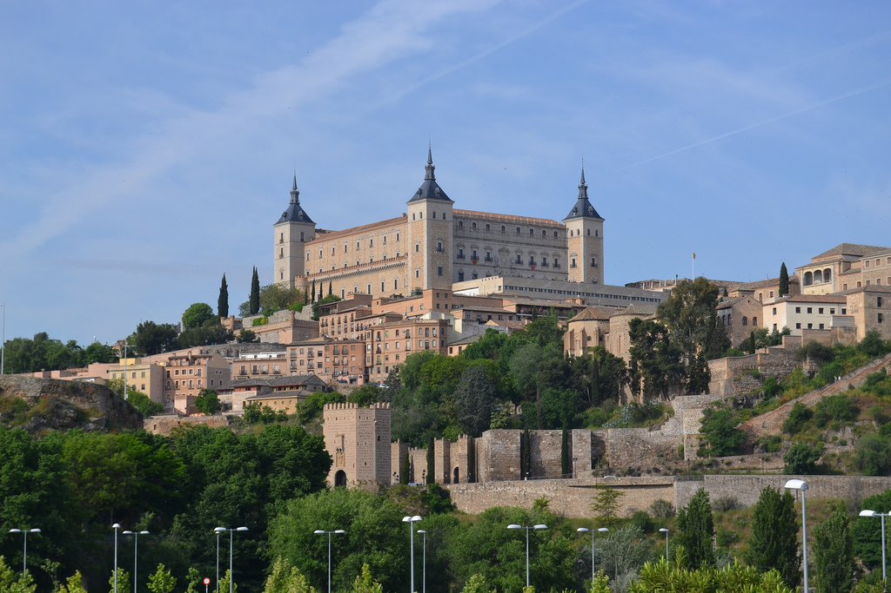
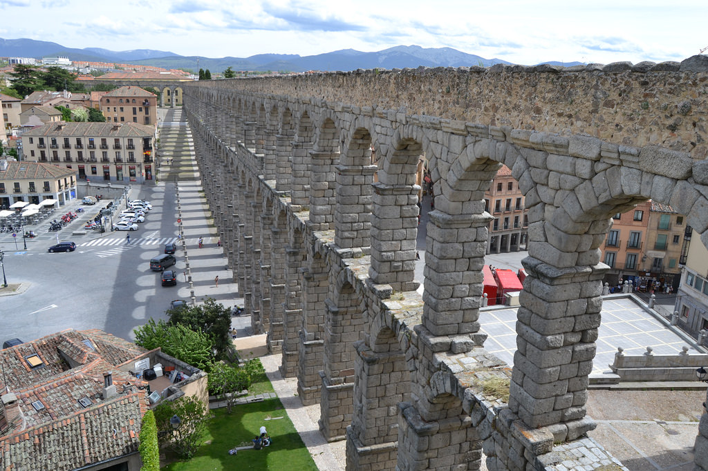

{kind=link}
{kind=link}

| Etapa 1: Toledo | |||||
|---|---|---|---|---|---|
| Provincia: Toledo | Superficie: km2 | Población: ( hab./km2) |  | ||
| Municipio(s) visitado(s): | Superficie: km2 | Población: ( hab./km2) | |||
| Distancia recorrida: | Fecha: | Duración: | |||
| Arquitectura civil: | |||||
| Arquitectura religiosa: | |||||
| Museos: | |||||
| Naturaleza: | |||||
| Otros: | |||||
La provincia de Toledo se encuentra en Castilla-La Mancha, limitando la Comunidad de Madrid por el Sur con ella. Es un destino muy habitual entre los madrileños para hacer una excursión de un día o fin de semana dada su proximidad a Madrid. En tren (AVANT) se tarda unos 33 minutos en llegar desde Atocha y tiene un coste de unos 10 euros (20 euros con ida-vuelta).
Al llegar al destino, lo primero que llama la atención es la propia estación de tren de Toledo, con estilo mudéjar. Saliendo de ésta hacia la derecha y andando por una avenida durante unos 10 minutos, enseguida te topas con el río Tajo (el más largo de la Península y que desemboca en el Atlántico en Portugal), el cuál se cruza por un puente moderno desde el que se ve otro con más historia, el puente de Alcántara. Desde esta zona ya es posible divisar el Castillo de San Severiano y el Alcázar de Toledo en la zona alta de la ciudad.
Siguiendo hacia el centro, ayudándome de las indicaciones y letreros, ya empiezan a verse algunos edificios antiguos, murallas con torreones y puertas. No sabría decir cómo llegué hasta el Alcazar y la Catedral pues lo que hice fue callejear, casi siempre cuesta arriba por infinidad de calles, muchas de estilo medieval. Si sigues las cuestas hacia arriba casi con toda seguridad termines en la Plaza Zocodover y de ahí el Alcazar está a un paso. En dicha plaza compré unas postales con lo más característico de la ciudad.
El recorrido cansa, por lo que se recomienda llevar bastante agua y hacer descansos de vez en cuando en sus variados parques y jardínes. En uno de ellos, próximo al Alcazar, es posible divisar varios kilómetros del río Tajo.
Otros lugares que visité fueron el Museo de Santa Cruz, con variadas pinturas, tapices, esculturas y otros objetos como armas, libros antiguos y monedas. Entre las pinturas destacan varias del taller de El Greco.
También vi desde fuera o lejos el edificio de la Academia de Infantería, la Catedral, el Museo de El Greco y una sinagoga en el que fuera barrio judío. Junto a la catedral hay una oficina de turismo en la que entré a pedir un mapa y me dieron algunas indicaciones.
A la vuelta hacia la estación de tren no hice el trayecto inverso, sino que bajando por las cuestas (creyendo que me llevaría por el mismo lugar que vine, es fácil perderse) llegué a un camino que bordea el Tajo. Decidí entonces simplemente seguir esta ruta hacia el puente de Alcántara que se veía a lo lejos y después de unos 20 minutos llegué a la avenida que conecta con la estación de tren.
| << Portada | Etapa 1: Toledo | Etapa 2: Segovia >> |
| Etapa 2: Segovia | |||||
|---|---|---|---|---|---|
| Provincia: Segovia | Superficie: km2 | Población: ( hab./km2) |  | ||
| Municipio(s) visitado(s): | Superficie: km2 | Población: ( hab./km2) | |||
| Distancia recorrida: | Fecha: | Duración: | |||
| Arquitectura civil: | |||||
| Arquitectura religiosa: | |||||
| Museos: | |||||
| Naturaleza: | |||||
| Otros: | |||||
La provincia de Segovia se encuentra en Castilla y León, al noroeste de Madrid. Es otro destino próximo a la capital de España y al que se puede llegar en tren también en una media hora (10 euros ida, 20 euros ida-vuelta). Me sorprendió mucho que los últimos 10-15 minutos del trayecto se hacen dentro de un túnel larguísimo y completamente oscuro, por lo que solo se puede disfrutar de las vistas desde el tren en la primera parte del viaje. (Nota: Días después buscando información sobre este tema, descubrí que se trata del Túnel ferroviario que atraviesa la Sierra de Guadarrama, es el más largo de España)
En mi caso llegué a la estación de Segovia-Guiomar, ya que el tren era de alta velocidad. Esta estación se encuentra en las afueras de Segovia por lo que hay que tomar un autobus local (2 euros) que te espera justo al salir de la estación y que te deja en la Plaza de la Artillería, junto al acueducto, tras un trayecto de unos 15-20 minutos.
Tengo que reconocer que el acueducto no me sorprendió tanto como esperaba. No sé si fue por tratarse de una construcción repetitiva (arcos y más arcos) y con poco ornamento o detalles en los que fijarse. En cualquier caso, es una gran obra de ingeniería romana, seguramente la más importante en España de las que se conservan, y Patrimonio de la Humanidad. Existen unas escaleras que permiten acceder a una zona alta próxima al acueducto, desde la que se puede ver la obra con otra perspectiva, además de la sierra (Peñalara) y el resto de la ciudad. Pasé allí bastante rato contemplando las vistas.
Tras ver durante un rato el acueducto me dispuse a callejear y he de reconocer que me gustaron mucho sus calles, más que en el caso de Toledo (¿quizás porque no hay tantas cuestas?). Segovia está llena de miradores y si caminas durante unos minutos seguro que llegarás a alguno de ellos, desde los que se puede ver tanto las murallas de la ciudad como la naturaleza que rodea a la misma.
Otros monumentos que pude ver fueron el Alcazar de Segovia, la Catedral, la Plaza Mayor, una estatua de Antonio Machado y la casa donde vivió (aunque estaba cerrada a la hora en la que me pasé, al almuerzo). Allí me encontré con una mujer uruguaya, profesora de literatura, que estaba recorriendo España y especialmente interesada en visitar la Casa de Machado, además de la de Lope de Vega (en Madrid) y la de Cervantes (en Alcalá de Henares). No pudo entrar pues como digo estaba cerrada. Estuvimos hablando durante un buen rato y luego nos despedimos. Después me di cuenta de que no nos habíamos dicho nuestros nombres y que quizás en el futuro, si converso con otros viajeros, podría intercambiar correos o algo para mantener el contacto.
Compré unas postales como suelo hacer, en este caso en unas tiendas de recuerdos próximas a la catedral. Ya por la tarde regresé a la zona del acueducto para volver a verlo y un rato después tomé el autobus de regreso a la estación de Guiomar.
| << Etapa 1: Toledo | Etapa 2: Segovia | Etapa 3: Ávila >> |
| Etapa 3: Ávila | |||||
|---|---|---|---|---|---|
| Provincia: Ávila | Superficie: km2 | Población: ( hab./km2) | | ||
| Municipio(s) visitado(s): | Superficie: km2 | Población: ( hab./km2) | |||
| Distancia recorrida: | Fecha: | Duración: | |||
| Arquitectura civil: | |||||
| Arquitectura religiosa: | |||||
| Museos: | |||||
| Naturaleza: | |||||
| Otros: | |||||
La provincia de Ávila, limítrofe con la de Madrid (al igual que Toledo y Segovia), se encuentra en Castilla y León. Ávila es una ciudad cuyo centro histórico se encuentra dentro de un recinto amurallado de unos 3 km. Llegué a Ávila tras 1 hora y 30 minutos de trayecto aproximadamente, abordo de un tren media-distancia. Se trataba de un tren con destino Salamanca y que hacía parada en Ávila, entre otras, como El Escorial.
Durante el trayecto destacan los paisajes montañosos que en esta época del año ya son completamente verdes, con algunas vacas y otras reses. Logré ver el Monasterio de El Escorial desde la ventana del tren aunque con tamaño minúsculo ya que queda bastante lejos, así como la cruz de El Valle de los Caídos. Por aquella zona, durante varios kilómetros de vía y junto a esta, se podían observar muchísimas flores de color rojo (amapolas), amarillo (¿margaritas?) y violetas, curiosamente los colores de la bandera de la II República.
Me bajé en mi parada, Ávila, y el tren siguió su destino hacia Salamanca. Saliendo de la estación continué todo recto hasta que encontré los primeros indicativos turísticos. Tras unos 10 minutos andando, llegué a las inmediaciones de la muralla y la Basílica de San Vicente. Tomé algunas fotos y me dirigí a la oficina de turismo, de varias plantas, donde había algunas maquetas de la muralla y otros carteles informativos.
Al salir de la oficina, caminé unos metros y enseguida dí con una de las múltiples puertas y arcos de la muralla, en este caso el Arco del Mariscal. Es una zona alta desde la que se ven los campos que rodean Ávila. Le pedí a unas chicas que también se veía que hacían turismo que me sacaran una foto usando como fondo la muralla.
A continuación crucé la muralla por dicho arco y me dediqué a callejear sin un rumbo concreto, llegando a la Plaza del Mercado chico, donde se encuentra el Ayuntamiento. Seguí andando, pasando por delante del Archivo General Militar de Ávila y algún edificio religioso. Vi los indicativos para llegar a Los 4 Postes, un punto elevado a las afueras desde la que se ve las murallas al completo, por lo que seguí dicho rumbo para tomar algunas fotografías. Pronto llegué a los límites de la muralla y a otra de sus puertas, cruzándola esta vez hacia afuera.
En días anteriores había explorado en Google Maps cómo llegar a Los 4 Postes, situado en un lateral de la carretera que lleva a Salamanca, pero sobre el terreno a veces las cosas no son tan evidentes. En las inmediaciones estaba el río Adaja, que hay que cruzar ya que Los 4 Postes están en la otra margen. Tan solo veía un puente para coches sin acera, que no me atrevía a cruzar. Supuse que debía haber otro modo de llegar allí así que merodeé un poco por la zona, sin éxito. Entonces vi a un hombre con mochila y pelo largo y blanco, al que saludé, ya que parecía buscar también algo. Se trataba de un peregrino que me comentó que estaba haciendo el Camino de Santiago al revés, partiendo de Santiago para llegar a la zona de Levante, concretamente Alicante. Le pregunté si sabía cómo llegar a Los 4 Postes y me dijo que él venía de allí justamente. Me explicó que había un puente peatonal camuflado detrás de unos arbustos, de ahí que no lo viera. Tras charlar un par de minutos más, me despedí y crucé ya hacia el otro lado, llegando enseguida a Los 4 Postes, desde donde tomé algunas fotografías panorámicas de Ávila.
Ya era la hora de comer así que me quedé en las proximidades del río Adaja, donde encontré un merendero con algunas mesas y bancos de piedra completamente vacío y allí me senté a comer a la sombra, pues el sol apretaba bastante. Después tomé algunas fotos del río y me puse de nuevo en marcha para seguir recorriendo la muralla por la parte externa. Llegué a otra de sus puertas y accedí al interior nuevamente, llegando a la Plaza de la Santa. Seguí andando hasta llegar a la Catedral que solo vi por fuera y compré unas postales en una tienda cercana.
Callejeé un poco más y luego ya puse rumbo de vuelta hacia la estación.
| << Etapa 2: Segovia | Etapa 3: Ávila | [[| >>]] |